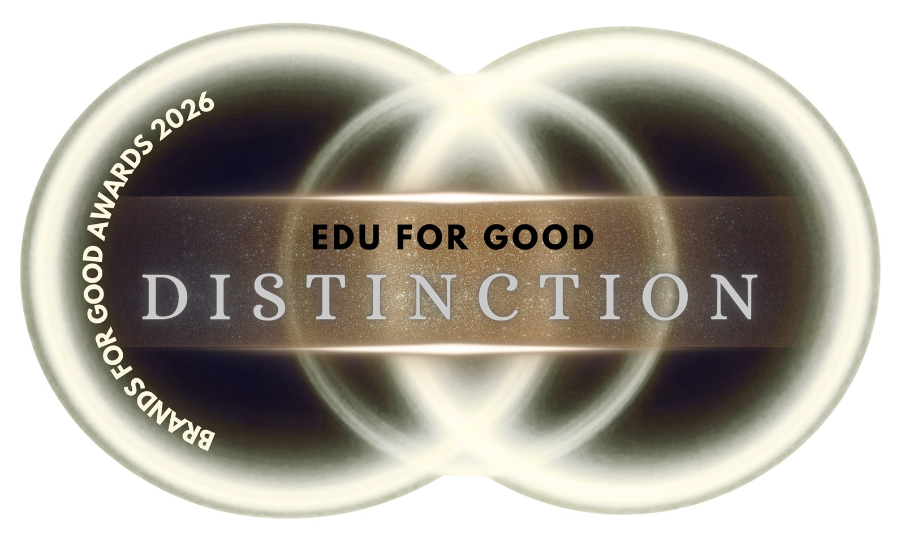

El Clube Amplexo Educação recibió el reconocimiento internacional EDU FOR GOOD – Distinction, otorgado por los Brands For Good Awards 2026, en Singapur.
La premiación reconoce a organizaciones que incorporan el propósito en sus prácticas y transforman sus valores en acciones capaces de generar impacto social, ambiental o inclusivo. En la categoría EDU FOR GOOD se destacan iniciativas que utilizan la educación para hacer el aprendizaje más accesible y transformador, fortalecer comunidades e inspirar cambios sociales duraderos.
Según la comunicación oficial, la edición de 2026 reunió a más de 110 marcas de más de 25 países. La clasificación Distinction reconoce a organizaciones que han demostrado un impacto relevante, innovación, efectividad y alineación con prácticas responsables.
“Recibir esta distinción no representa solo un logro institucional. Reconoce una historia construida por estudiantes, familias, profesores, aliados y profesionales que creen que la educación puede transformar vidas. Queremos que nuestros estudiantes alcancen resultados académicos, pero, sobre todo, que comprendan todo lo que pueden hacer por el mundo con lo que aprenden”, afirma Clarissa Vergara.

El reconocimiento también marca una nueva etapa en la actuación institucional de Amplexo, que busca ampliar las iniciativas relacionadas con la educación para el bien, el protagonismo estudiantil y la realización de proyectos capaces de transformar el conocimiento en impacto social.
Para la organización, educar para el bien significa no dejar talentos invisibles, crear oportunidades reales y movilizar a familias, educadores, especialistas, empresas y aliados para que cada niño y cada niña sea reconocido y valorado.
Se presta especial atención a los niños, niñas y jóvenes que todavía enfrentan barreras para desarrollar plenamente su potencial, en especial a los estudiantes neurodivergentes, que tienen formas singulares de pensar, aprender y comprender el mundo. Cuando encuentran acogida, estímulo, apoyo adecuado y oportunidades reales, pueden transformar sus ideas y talentos en iniciativas relevantes, capaces de generar un impacto positivo en la sociedad.
“Estamos transformando este reconocimiento en un compromiso educativo aún más concreto. Queremos ampliar el apoyo a proyectos que nacen de las ideas de nuestros estudiantes, fortalecer iniciativas guiadas por el propósito y mirar con intencionalidad el impacto que la educación puede generar más allá del aula. Más que celebrar un logro, queremos convertirlo en un punto de partida para nuevas oportunidades, acciones consistentes y transformaciones reales en la vida de las personas y de las comunidades”, completa Clarissa.
Sobre los Brands For Good Awards
Los Brands For Good Awards reconocen a marcas y liderazgos guiados por valores y propósito. La premiación contempla las categorías Business for Good, Tech for Good, Culture for Good, Leadership for Good y Edu for Good. Las organizaciones pasan por una evaluación de elegibilidad y por el análisis de un panel independiente, que considera el propósito, el impacto positivo, la innovación y el compromiso con el crecimiento responsable.
Sobre el Clube Amplexo Educação
El Clube Amplexo Educação es un club de enriquecimiento curricular dedicado al desarrollo cognitivo, académico, emocional y social de niños, niñas y jóvenes. La institución desarrolla proyectos pedagógicos que valoran la curiosidad, el protagonismo y las diferentes formas de aprender, siempre con una mirada atenta a la inclusión.
Su metodología reúne clases en vivo, materiales propios, proyectos prácticos, acompañamiento pedagógico y apoyo a las familias, y valora tanto los logros académicos como el desarrollo de la autonomía, la curiosidad y la responsabilidad social de los estudiantes.
← Volver al Jornal Amplexo